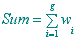
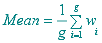
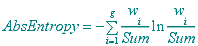
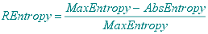

The Minimum is the smallest value of the index;
The Maximum is the greatest value of the index;
The
Sum
is the arithmetical sum of all index values: 
The
Mean is the average of all index values: 
The
Variance is the average square deviation of the index values:

The
Standard
Deviation is the square root of the variance:

The
Absolute
Entropy (actually, the 'informational entropy') is computed according to
Shannon's formula. Both the natural and the 2-base logarithm versions are given: 
The
Maximum
Entropy is the logarithm of the number of nodes. Both the natural and the 2-base logarithm versions are given:

To
allow comparing networks of different sizes, the
Relative
Entropy is computed as the difference between the Maximum and the Absolute
Entropies divided by the Maximum Entropy: 